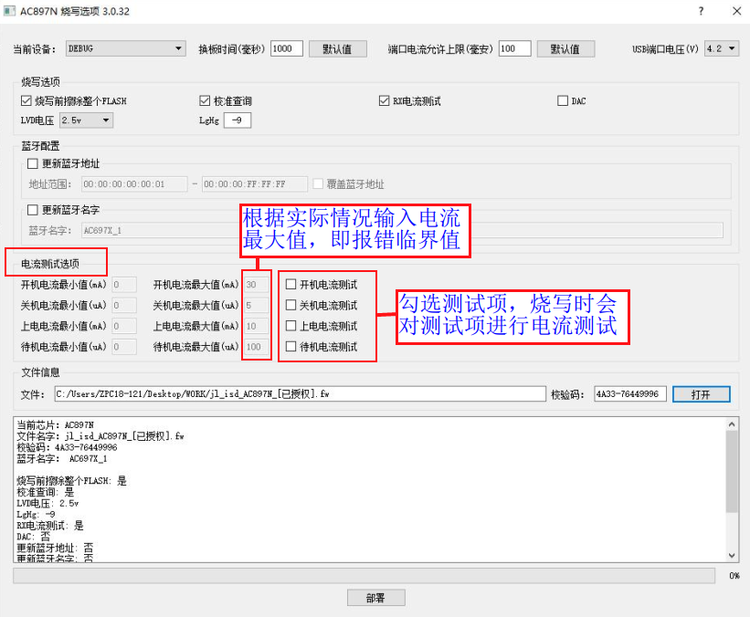
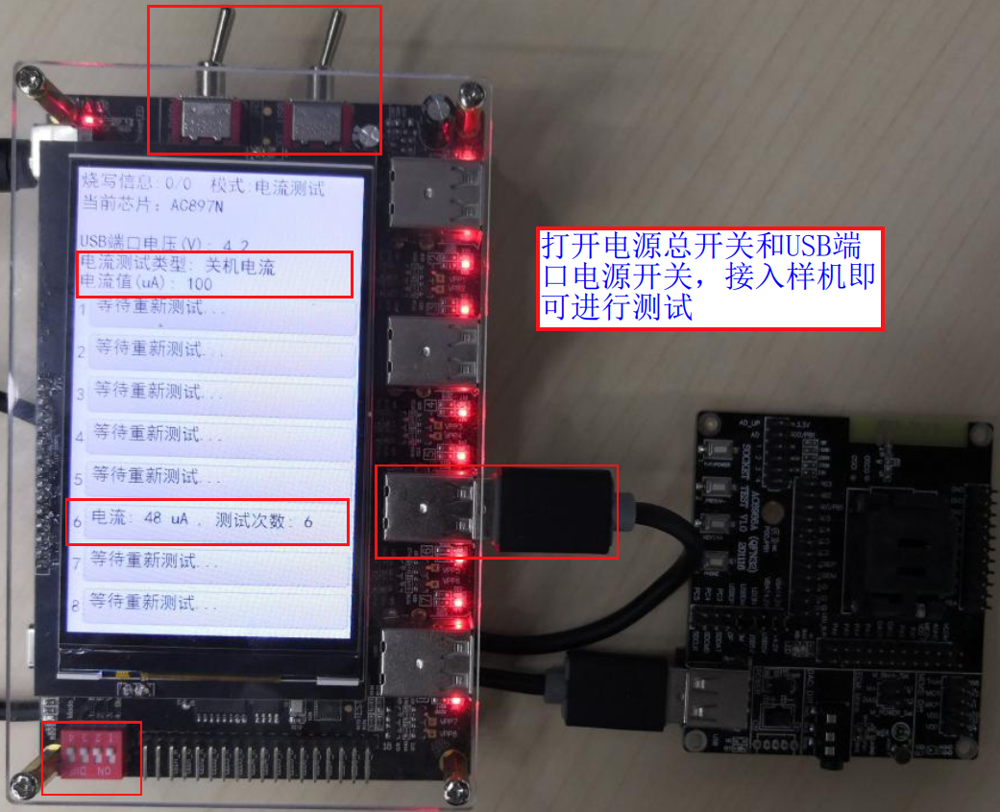

2.13. Current and Power Consumption Test
2.13.1. Test purpose and test types
Test purpose
The 1-to-8 programmer has a built-in current test module that can measure the current drawn by the loads on its 8 USB programming ports. The current and power consumption test function is mainly used to measure the device's current in various situations, in order to screen out chips whose current values do not meet the requirements in each situation.
Test types
The 1-to-8 programmer supports testing chip power consumption while programming the chip firmware. It can test the device's power consumption in 4 situations: power-on (the moment the device starts being programmed), startup (the device simulates startup), standby (the chip enters standby mode) and shutdown (the chip enters shutdown mode).
A standalone current test function is also supported, which can test the device's static current (while powered) and shutdown current (in soft shutdown mode).
2.13.2. Using the combined programming and power consumption test
The combined programming and power consumption test function is currently supported on the 1-to-8 programmer only for the AC897N and AD697N chips. If you need this test for other models, consult Jieli technical support.
Test steps:
[1] In the control panel for updating the target chip firmware, open and select the target chip firmware to be programmed;
[2] Select and configure the current test items as shown in Current test item configuration (do not set the values too small: the measured current depends heavily on the device's hardware circuit, and the programmer's test accuracy and stability are not very high, so it can only screen out chips with obviously abnormal power consumption);
[3] Update the firmware and configuration information to the programmer;
[4] During chip firmware programming, the selected power-on, startup, standby and shutdown current tests are performed. If a measured current value is greater than the set maximum, the programmer reports a current error;

Current test item configuration
2.13.3. Standalone current test function
For the standalone current test, the static current test supports chips of any model, while the shutdown current test is currently supported on the 1-to-8 programmer only for the AC897N, AD697N and AD698N chips. If you need this test for other chip models, consult Jieli technical support.
Open the PC tool control panel by following the steps in the section "Open the PC tool control panel". In the control panel, click "File" (文件) -> "Deploy" (部署) -> "Current test" (电流测试) to open the current test control panel, then perform the operations shown in Current test deployment screen:
[1] Select the chip model (for the static current test, the chip model does not matter; simply keep the default model);
[2] Select the current test type: static or shutdown current test;
[3] Enter the current threshold (the test limit; if the set value is exceeded, an error is reported and the chip is judged to have excessive power consumption);
[4] Click Deploy (部署) to deploy the current test function to the programmer. After successful deployment, power-cycle the programmer to perform the current test;

Current test deployment screen
Before performing the current test, confirm or set the programmer's current working mode to current test mode (see "Programmer working modes: introduction and setup")
Static current test
In the static current test, the programmer works like an ammeter: it measures the current consumed by the device while the USB programming interface supplies power to it. As shown in Static current test, after the device is connected to a USB programming channel of the programmer, the programmer display shows the device's current consumption in real time. If the current exceeds the set threshold for more than 8S, the programmer reports an error. If the device's instantaneous current exceeds 160mA, the programmer cuts off power to the USB port and reports an error; the programmer must then be restarted before testing can continue.

Static current test
Shutdown current test
In the shutdown current test, the programmer measures the current consumed by the device in soft shutdown mode while the USB programming interface supplies power to it. As shown in Shutdown current test, after the device is connected to a USB programming channel of the programmer, the programmer display shows the device's current consumption in real time. If the measured value exceeds the set threshold in several consecutive measurements, the programmer reports an error. If the device's instantaneous current exceeds 160mA, the programmer cuts off power to the USB port and reports an error; the programmer must then be restarted before testing can continue.

Shutdown current test